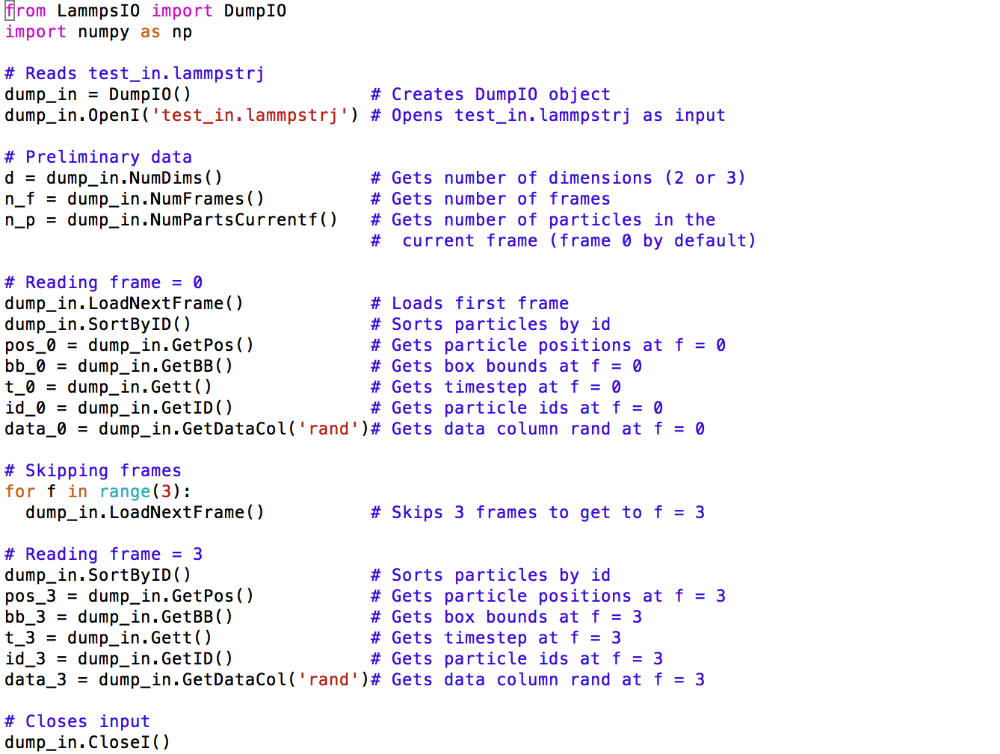

Examples¶
NetCDFIO¶
The following code reads the first (f = 0) and the fourth (f = 3) frames of a netCDF file labeled test_in.nc. This input file has a data column labeled rand. It then outputs these two frames as a single netCDF file, test_out.nc. Code is available at https://github.com/Ivancic91/LammpsIO in the examples directory.
DumpIO¶
The following code reads the first (f = 0) and the fourth (f = 3) frames of a dump file labeled test_in.lammpstrj. This input file has a data column labeled rand. It then outputs these two frames as a single dump file, test_out.lammpstrj. Code is available at https://github.com/Ivancic91/LammpsIO in the examples directory.
